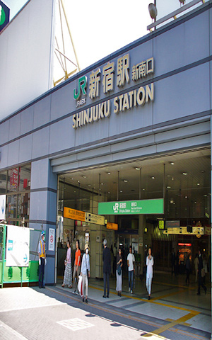

เมื่อฉันมาถึงที่บ้านของสถานีแรก

เล็งออกจากใต้ใหม่
เมื่อฉันได้รับทางเข้าใต้ใหม่
ผมมุ่งมั่นที่จะชินจูกุอัลสตูดิโอ
เมื่อมาถึงที่ชินจูกุอัลสตูดิโอ
ผมมุ่งมั่นที่จะ Yasukuni ถนน
เมื่อมาถึงที่ถนน Yasukuni
ฉันข้ามสี่แยก
ถ้าคุณเดินตรงไปยังเปลี่ยนทิศทางของร่างกาย
ตั้งแต่ผมมาถึงที่ชินจูกุ Prince Hotel
กรุณาเช็คอินที่โรงแรม